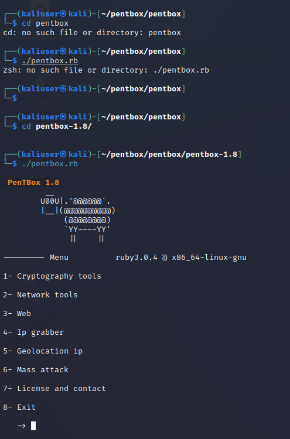

penetration-box
First of all, i use VMware workstation to create the virtual box with Kali Linux, so we can easily make our test in a safe isolated space. Also, kali Linux comes with necessary tools like penetration test tool which is our topic right now

After that, I open the pen box 1,8 application. When I was doing there were some importing errors that I had to solve them first. I tried to enter the main page which you can see the picture under this blog but couldn't reach there
the reason was even though the pen box comes with kali linux the real application part which we use for an attack is not uploaded. I solved this issue with find the necessary files at GitHub , download them to kali linux virtual box into pen box , after that, we opened the exactly same page under this blog.

After that, we tried to scan the weakness of one random site to try our penetrating test. after some, I couldnt find any weakness in that site and ı finished my penetration test.
evaluation: that was enjoyable to try to find weaknesses in random sites, even though we couldn't find any weaknesses, one of our objectives was to define any weakness and give a notification to the owner of that site, it was successful and helpful Assignment and I would do that again in the future.